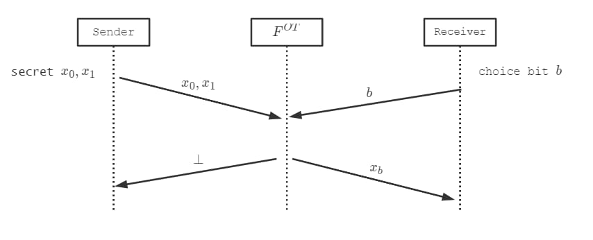
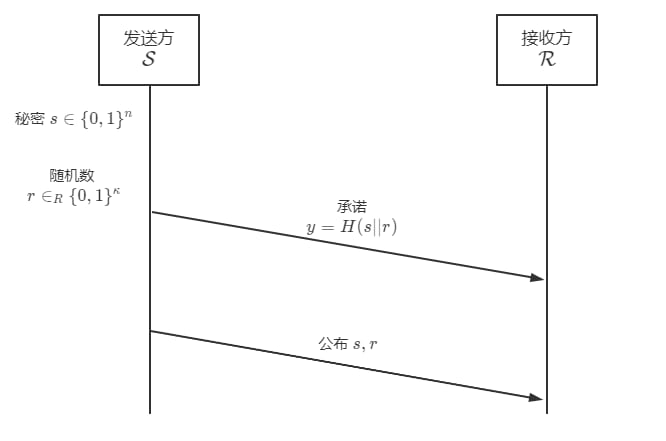

有一说一，感觉安全计算这个方向还挺有意思的。
安全多方计算
安全多方计算(Secure Multi-Party Computation, MPC)允许一个群组在不披露任意参与方私有输入的条件下实现联合计算。
也就是说，安全多方计算若干个参与方约定一个需要计算的函数，接下来各个参与方通过一些协议输入自己的秘密，通过这些秘密计算得到函数的结果。 在这个过程中，安全计算需要保证能够得到函数的输出，同时各个参与者的秘密也不会被泄露。
比如说Alice，Bob，Carly各自持有秘密\(a\)，\(b\)，\(c\)，他们需要计算函数\(f(a,b,c)\)的结果\(y\)，同时又不想要别人知道自己的秘密，这就可以使用安全多方计算的方式。
安全多方计算实际上是包括在了安全计算(Secure Computation)的范畴里的。安全计算除了对于数据的隐私性有保证之外，还有一个需求是可验证计算(Verifiable Computation)，也就是参与方能够确定计算结果就是函数的输出结果。
以上面的例子来说，Alice接收到多方计算的结果\(y_0\)之后，她能够确定这个结果\(y_0=f(a,b,c)\)就是正确的输出，而非攻击者捏造的结果。
外包计算
有时候与多方计算相提并论的另一个概念是外包计算(Outsourced Computation)。在外包计算中，参与者分为一个拥有数据的数据持有方和一个接收并存储加密数据、对加密数据进行计算的计算方。计算方计算结果之后，将其返回给数据持有方，在这个过程中，计算方不能够得到和输入数据、中间结果和最终结果相关的任何数据。
一种常见的策略是，数据持有方Alice拥有数据\(x\)，她需要获得函数\(f(x)\)的结果。Alice通过自己的密钥\(k_{pub}\)加密数据得到\(c=Enc(k_{pub},x)\)，并将密文\(c\)发送给计算方Bob。Bob得到数据之后通过某种方式计算\(y'=f(c)\)，将计算结果\(y'\)返回给Alice。Alice得到数据\(y'\)之后使用自己的密钥\(k_{priv}\)进行解密得到\(f(x)=Dec(k_{priv},y')=Dec(k_{priv},f(Enc(k_{pub},x)))\)。 在这整个计算过程中，Bob得到的都是密文和密文的运算结果，因此他无法从中获得相关信息。
这种策略存在的一个明显问题在于，需要满足\(f(x)=Dec(k,f(Enc(k,x)))\)。也就是说，对加密数据执行运算之后解密等价于对原数据执行运算。这需要密码体系\((Enc,Dec)\)满足特定的条件，即是同态加密(Homomorphic Encryption)。
如果在加密数据上能够实现部分特定的运算，则这个加密方案为部分同态加密(Partially-Homomorphic Encryption, PHE)。例如常见的RSA为乘法同态算法，Paillier算法为加法同态算法。
如果一个密码体系能够同时支持加法和乘法运算，那么就可以实现对任何有限函数的计算，这样的加密体系就是全同态加密(Fully-Homomorphic Encryption, FHE)，目前主要的FHE方案都是基于格密码体系的。
就目前的方案来说，FHE的计算复杂度是远大于MPC的，但是MPC的通信开销高于FHE，因此两种方案的选择需要权衡算力与通信成本。
多方计算
外包计算方案中，计算方并不是数据所有方。而多方计算中所有的参与者都是数据所有方，都参与协议的计算和执行。
MPC的概念最早由姚期智提出并给出了乱码电路协议作为一个解决方案，他提出了这样的一个问题：
百万富翁问题(Yao's Millionaires' problem)
两个百万富翁想要知道谁更富有，但是又不想知道对方财富数额，也不想让对方知道自己的财富数额。
也就是说，两个参与者\(P_1\)和\(P_2\)各自持有秘密\(x_1\)和\(x_2\)，想要得到\(x_1\le x_2\)的布尔值。
安全多方计算的定义
杂七杂八的概念
可忽略函数(Negligible Function)：\(\mathbb{N}\to\mathbb{R}\)是任意一个趋近于0速度比任何多项式的倒数都快的函数。也就是对于任何多项式\(p\)，除了有限多个\(n\)之外都有\(\upsilon(n)<1/p(n)\).
计算安全参数\(\kappa\)：攻击者通过离线计算破解一个问题的困难程度。这个参与代表着破解一个算法需要的计算空间的大小，例如一个使用了\(\kappa\) bit模数的RSA，破解这个问题的穷举的空间大小为\(n\in\{0,1,2,...,2^\kappa-1\}\).
计算安全参数的要求攻击者计算能力有限。如果攻击者具有无穷大的计算能力，破解许多NP问题（整数分解好像还没证明是NP问题？，离散对数等等）都不构成困难，那么这个参数也就没有意义了。
计算安全参数考虑计算能力受限的攻击者对协议的威胁性，而还有针对协议本身的攻击方式，离线计算并不会对这种攻击造成影响。信息论中统计安全参数用来表述该情况：
统计安全参数\(\sigma\)：攻击者实施对交互式协议攻击的困难程度。这个参数是依赖于不同变量之间的分布距离，如果两个变量之间距离非常小（\(<2^{-\sigma}\)），那么猜测区分这两个变量基本上是无法实现的。
结合上面两个参数，一个协议不满足安全性的概率应该是\(2^{-\sigma}+\upsilon(\kappa)\)，其中\(\upsilon\)是一个可忽略函数。如果攻击者拥有无穷的计算能力，那么我们就不考虑\(\upsilon(\kappa)\)，仅考虑统计安全参数（也就是只在信息论上考虑安全性）。
符号\(\in_R\)代表从某个分布中随机均匀采样得到某个元素。 \(k\in_R\{0,1\}^\kappa\)代表随机选取\(\kappa\) bit长度的字符串，\(v\in_R D\)代表从概率分布中选取一个元素。
这个概念是为了下面的定义：
不可区分性(Indistinguishable)：两个以安全参数为输入的算法\(D_1\)和\(D_2\)，对于所有的算法\(A\)，都存在一个可忽略函数\(\upsilon\)，满足： \[ Pr[A(D_1(n))=1]-Pr[A(D_2(n))=1]\le\upsilon(n) \] 则称\(D_1\)和\(D_2\)是不可区分的。
这个定义实际上的意义就是，使用任何算法A，都不能够将两个\(D_1\)和\(D_2\)区分开来。例如如果我们无法将随机数发生器的结果和一个加密算法的结果区分开，那么这个算法就是非常安全的。
如果算法A为多项式时间的算法，那么这个定义表述的是计算不可区分性(Computational Indistinguishablility)。
如果对于所有的算法A，都满足上面的性质，则这个称为统计不可区分性(Statistical Indistinguishablility)，对于统计不可区分性，我们定义统计距离(Statistical Distance)如下：
\[ \Delta(D_1(n),D_2(n))=\frac 1 2 \sum_x|Pr[x=D_1(n)]-Pr[x=D_2(n)]| \]
计算安全性(Computational Security)用来表述在多项式时间攻击者攻击下的安全性。信息论安全性(Information-theoretic Security)用来表述任意攻击者攻击下的安全性。
秘密分享
一个\((t,n)\)-秘密分享协议可以将秘密值\(s\)分享成\(n\)个秘密份额，通过任意\(t-1\)个秘密份额无法得到和秘密\(s\)有关的信息，但是通过任意\(t\)个秘密份额可以重建秘密值\(s\)。
秘密共享的安全性可以参考下面的定义(Beimel and Chor, 1992)：
\(D\)为秘密值所在域，令\(D_1\)为秘密份额所在域，令\({\rm Shr:}D\to D_1^n\)为秘密分享算法，\({\rm Rec:}D_1^k\to D\)为秘密重建算法。\((t,n)\)-秘密分享方案包含算法\({\rm (Shr,Rec)}\)，满足：
正确性：令\((s_1,s_2,...,s_n)={\rm Shr}(s)\)，有： \[ Pr[\forall k\ge t,{\rm Rec}(s_{i_1},...,s_{i_k})=s]=1 \]
完美隐私性：任意包含少于\(t\)个秘密份额的集合都不会在信息论层面上泄露与秘密值有关的任何信息。对于任意两个秘密值\(a,b\in D\)和任意可能的秘密份额向量\(\vec{v}=(v_1,v_2,...,v_k)\)，如果\(k<t\)，那么有： \[ Pr[\vec{v}={\rm Shr}(a)\mid_k]=Pr[\vec{v}={\rm Shr}(b)\mid_k] \] 其中\(\mid_k\)表示向量在\(k\)维子空间上面的投影。
上面的定义实际上说明了两件事情，首先是正确性，也就是给定了\(t\)个秘密份额，恢复的\({\rm Rec}(s_{i_1},...,s_{i_k})\)一定就是原来的秘密\(s\)（概率等于1）.
接下来是完美隐私性，也就是说少于\(t\)个的秘密的组合不能泄露秘密的信息，这里给出了公式化的定义，如果有一组秘密\(\vec{v}=(v_1,v_2,...,v_k),k<t\)，那么通过任何算法恢复出来的结果落在其他不正确的结果上的概率是一样的，也就是不能够区分开实际的秘密和错误的秘密。
假设Alice给Bob发送了一条消息"Hello,this's Alice"。如果满足完美隐私性，一个攻击者Eve从部分秘密份额中恢复出来的结果可能是任何消息，例如"1145141919810"或者"Never gonna give you up"（不考虑长度的话），或者一堆乱码，攻击者不能从这些结果中找到真正有用的信息。
MPC的安全性
现实-理想范式(Real-Ideal Paradigm)
现实-理想范式通过引入了一个“理想世界”，通过比较理想世界和现实世界的关系来对安全性进行了定义。
理想世界：
每个参与方\(P_i\)拥有自己的私有输入\(x_i\)，各个参与方将私有输入发送给一个完全可信的参与方\(\mathcal{T}\)，\(\mathcal{T}\)计算目标函数\(\mathcal{F}(x_1,x_2,...,x_n)\)，并且将结果返回给各个参与方。
\(\mathcal{T}\)称为可信参与方（功能函数）。
一个理想世界的攻击者可以攻陷若干个参与方\(P_i\)，控制他们的行动，但是不能攻陷可信参与方\(\mathcal{T}\)。理想世界中的攻击者可以获取的数据也只有可信参与方\(\mathcal{T}\)的输出\(\mathcal{F}(x_1,x_2,...,x_n)\)，此外他获取不到其他信息。
显然，这样的一个可信参与方在现实中是不存在的。
现实世界：
所有的参与方通过一个协议\(\pi\)进行通信，这个协议\(\pi\)为每一个参与方\(P_i\)指定函数\(\pi_i\)。\(\pi_i\)输入安全参数、参与方的私有输入\(x_i\)、随机数和\(P_i\)目前为止收到的消息列表，输出需要发送的下一个消息或者指定某个特定的输出。
上面定义的意思就是，在现实世界中，MPC的所有参与方遵循某一个协议进行通信，这个协议指定了每个参与方需要计算、输出的消息内容。
现实世界中的攻击者可以攻陷某一个参与方，也可以作为一个参与方参加协议（在协议开始之前攻陷参与方）。
如果一个攻击者在现实世界中的攻击能够达到和理想世界攻击相同的效果，那么这个协议就是安全的。（也就是说，即使这个协议被攻破了，也不是MPC协议的问题）我们要做的就是让现实世界中提供的安全性和理想世界中的安全性等价。
半诚实安全性(Semi-honest Security)
半诚实(Semi-honest)的攻击者可以攻陷参与方，但是仍然会遵循协议的规则执行。也就是说这是一种处于被动的攻击模式。攻击者扮演被攻陷的参与方会尽可能收集能够得到的通信数据，并且努力从中获取信息。尽管参与方被攻击者攻破了，但是攻击者仍然让他们进行着自己本来该做的事情（只不过旁边有个人盯着）。攻击者的能力在这种情况下可以说是高度受限。
攻击者能够获得的包括被攻陷的参与者的私有输入，随机数和协议执行过程中接收到的消息列表。这些能够获得的信息就是攻击者的视角(View)，通过某个关于视角的可行的函数，攻击者就可以从视角中提取出有效的信息。
为了应用现实-理想模型，我们提出一个仿真者(Simulator)角色，他的视角包括了发送给可信参与方\(\mathcal{T}\)的输入和最后接收到的输出。
下面给出形式化语言定义：
\(\pi\)为一个协议，\(\mathcal{F}\)为一个功能函数。\(\mathcal{C}\)为被攻陷的参与方集合，\(\rm Sim\)是一个仿真者。
定义下面两个随机变量的概率分布：
\({\rm Real}_\pi(\kappa,\mathcal{C};x_1,x_2,...,x_n)\)：
在安全参数\(\kappa\)下执行协议，其中每个参与方\(P_i\)都将使用自己的私有输入\(x_i\)诚实的执行协议。令\(V_i\)为参与方\(P_i\)的最终视角，令\(y_i\)为参与方\(P_i\)的最终输出。
输出\(\{V_i\mid i\in \mathcal{C}\},(y_1,y_2,...,y_n)\)。
\({\rm Ideal}_{\mathcal{F},{\rm Sim}}(\kappa,\mathcal{C};x_1,x_2,...,x_n)\)：
计算\((y_1,y_2,...,y_n)\leftarrow\mathcal{F}(x_1,x_2,...,x_n)\)。
输出\({\rm Sim}(\mathcal{C},\{(x_i,y_i)\mid i\in\mathcal{C}\}),(y_1,y_2,...,y_n)\)
上面两个随机变量也就是分别代表了半诚实的攻击者在现实和理想世界中能够获得的信息。如果二者等价，那么现实世界的协议就和理想世界的协议的安全性等价。
给定协议\(\pi\)，如果存在一个仿真者\(\rm Sim\)，使得对于攻陷参与方集合\(\mathcal{C}\)的所有子集，对于所有的输入\(x_1,x_2,...,x_n\)，概率分布 \[ {\rm Real}_\pi(\kappa,\mathcal{C};x_1,x_2,...,x_n) \] 和 \[ {\rm Ideal}_{\mathcal{F},{\rm Sim}}(\kappa,\mathcal{C};x_1,x_2,...,x_n) \] 是不可区分的，那么这个协议在半诚实攻击者存在的条件下安全实现了\(\mathcal{F}\)。
恶意安全性(Malicious Security)
而恶意攻击者和半诚实攻击者相比能力要更加强大，恶意攻击者攻陷了参与者之后，并不一定会按照协议的规则进行。在尽可能窃听数据之外，攻击者会让参与者发送自己指定的数据参与协议。
在半诚实安全定义的基础上，我们给出下面的定义：
\(\mathcal A\)代表攻击者，\({\rm corrupt}(\mathcal A)\)为现实世界中被攻陷的参与方。\({\rm corrupt(Sim)}\)为理想世界被攻陷的参与方。
\({\rm Real}_{\pi,\mathcal{A}}(\kappa;\{x_i\mid i\notin {\rm corrupt}(\mathcal A)\})\)：
在安全参数\(\kappa\)下执行协议，其中每个诚实的参与方\(P_i\)(\(i\notin {\rm corrupt}(\mathcal{A})\))，使用自己的私有输入\(x_i\)执行协议，被攻陷的参与方发送的消息由攻击者\(\mathcal A\)选取。令\(V_i\)为参与方\(P_i\)的最终视角，令\(y_i\)为诚实参与方\(P_i\)的最终输出。
输出：\((\{V_i\mid i\in{\rm corrupt}(\mathcal A)\},\{y_i\mid i \notin {\rm corrupt}(\mathcal A)\})\)
\({\rm Ideal}_{\mathcal{F},{\rm Sim}}(\kappa;\{x_i\mid i\notin {\rm corrupt(\mathcal A)}\})\)：
执行\(\rm Sim\)，直到输出一个输入集合\(\{x_i\mid i\in {\rm corrupt(\mathcal A)}\}\)（也就是攻陷了一系列的参与者）。计算\((y_1,y_2,...,y_n)\leftarrow\mathcal{F}(x_1,x_2,...,x_n)\)。将\(\{y_i\mid i\in {\rm corrupt}(\mathcal A)\}\)发送给\(\rm Sim\)。\(V^*\)为\(\rm Sim\)最终输出（即参与方的仿真视角集合）。
输出：\((V^*,\{y_i\mid i \notin {\rm corrupt(Sim)}\})\)
类似的可以给出恶意攻击者存在条件下安全实现\(\mathcal F\)的定义:
给定协议\(\pi\)，如果任意一个现实世界中的的攻击者\(\mathcal A\)，存在一个满足\(\rm corrupt(\mathcal A)=corrput(Sim)\)的仿真者\(\rm Sim\)，对于诚实参与方的所有输入\(\{x_i\mid i \notin{\rm corrupt(\mathcal A)}\}\)，概率分布 \[ {\rm Real}_{\pi,\mathcal{A}}(\kappa;\{x_i\mid i\notin {\rm corrupt}(\mathcal A)\}) \]
和
\[ {\rm Ideal}_{\mathcal{F},{\rm Sim}}(\kappa;\{x_i\mid i\notin {\rm corrupt(\mathcal A)}\}) \] 是不可区分的，就称协议在恶意攻击者存在的条件下安全地实现了\(\mathcal F\)。
功能函数
在MPC中有几种重要的用于构造模块的功能函数。
不经意传输(Oblivious Transfer, OT)
不经意传输是一类常见的协议，是MPC方面的一个关键问题（OT和MPC理论层面上是等价的，可以由OT构造MPC，也可以相反）。
常见的一个OT模块是2选1-OT：
参与方分为发送方\(\mathcal S\)和接收方\(\mathcal R\)。\(\mathcal S\)拥有两个秘密\(x_0,x_1\in \{0,1\}^n\)，接收方有一个选择比特\(b\)。
功能函数\(\mathcal F^{OT}\)实现了这样的功能：
- \(\mathcal R\)将选择比特\(b\)发送给\(\mathcal F^{OT}\)，\(\mathcal S\)将秘密\(x_0,x_1\)发送给\(\mathcal F^{OT}\)。
- \(\mathcal R\)接收到秘密\(x_b\)，\(\mathcal S\)接收到\(\perp\)。

经过OT，接收方\(\mathcal R\)可以获取自己需要的秘密\(x_b\)，但是无法获取另一个秘密；同时，发送方\(\mathcal S\)并不知道对方获取了哪一个秘密（也不知道是否获取到了秘密）。
常见的扩展有k选1-OT等，也是对2选1-OT的扩展。
承诺(Commitment)
承诺协议允许发送方想接收方对一个秘密做出承诺，发送方后续向接收方披露这个秘密。
承诺满足两个性质：
- 隐藏性(Hiding)：在发送方披露秘密之前，接收方无法得到秘密相关的信息。
- 绑定性(Binding)：发送方做出承诺之后，无法再对秘密值进行修改。
参与方分为发送方\(\mathcal S\)和接收方\(\mathcal R\)。\(\mathcal S\)拥有一个字符串\(s\in \{0,1\}^n\)。
功能函数\(\mathcal F^{\rm Comm}\)实现了：
- \(\mathcal S\)向\(\mathcal F^{\rm Comm}\)发送一个字符串\(s\in\{0,1\}^n\)。\(\mathcal F^{\rm Comm}\)向\(\mathcal R\)发送“已承诺”。
- 一段时间后，\(\mathcal S\)向\(\mathcal F^{\rm Comm}\)发送“打开”，\(\mathcal F^{\rm Comm}\)向\(\mathcal R\)发送\(s\)。
这个协议可以通过哈希函数来进行简单的实现。

发送方将秘密和随机数拼接的哈希值作为承诺内容，接收方是无法从中获取到秘密的信息的，同时，因为哈希函数的抗碰撞性，发送方也难以篡改秘密。
零知识证明(Zero-Knowledge Proof, ZKP)
零知识证明能够让证明方使得验证方相信自己知道一个满足\(\mathcal C(x)=1\)的\(x\)（\(\mathcal C\)为一个公开的函数），但是同时不泄露关于\(x\)的任何信息。
例如Alice向Bob证明自己知道一个数独的解，但是又不希望泄露关于这个解的信息。他们可以经过这样一个过程达到目的：Bob随机指定一行、一列或一个九宫格，Alice将Bob选中部分的数字提取出来并打乱，交由Bob验证是否是1~9，重复多次，由此证明Alice知道正确结果。
下面给出零知识证明功能函数的定义：
参与方分为证明方\(\mathcal P\)和验证方\(\mathcal V\)。
功能函数\(\mathcal F^{\rm zk}\)实现了：
\(\mathcal P\)将\((\mathcal C,x)\)发送给\(\mathcal F^{\rm zk}\)，其中\(\mathcal C:\{0,1\}^n\to\{0,1\}\)为输出为一个比特的布尔电路，\(x\in \{0,1\}^n\)。如果\(\mathcal C(x)=1\)，那么\(\mathcal F^{\rm zk}\)将\(({\rm proved},\mathcal C)\)发送给\(\mathcal V\)，否则发送\(\perp\)。
参考资料
[1] David Evans; Vladimir Kolesnikov; Mike Rosulek, A Pragmatic Introduction to Secure Multi-Party Computation , now, 2018.